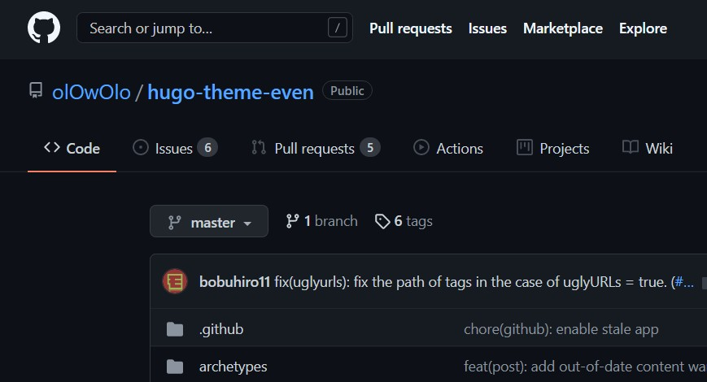
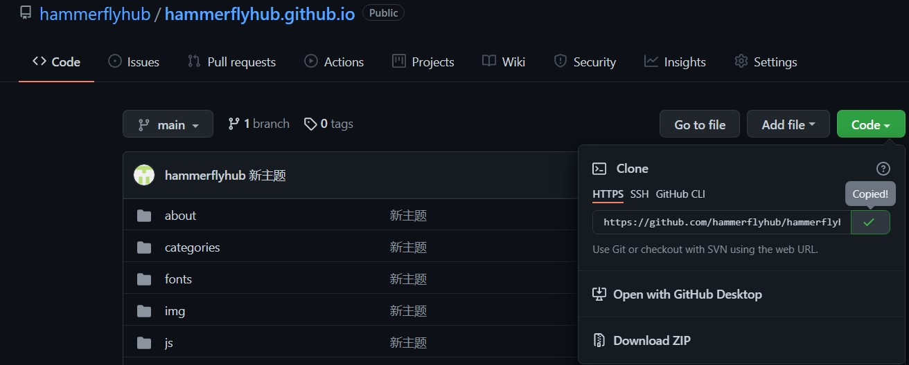

用rstudio搭博客
Contents
用 rstudio 的 blogdown 包搭建博客。重要命令：
|
|
在github中创建名为 用户名.github.io 的 Repo
这是为了弄到一个免费的网址。创建一个名为用户名.github.io的repo，然后在repo里创建名为index.html的网页文件。我的github账号叫 hammerflyhub，所以我的repo是hammerflyhub.github.io, 而我的博客网址就是https://hammerflyhub.github.io/。
下载 r 和 rstudio 并安装 blogdown 包
创建博客当然有更简单的方法，不过我电脑上正好有 r 和 rstudio 所以干脆就用这两个了。下载安装好 r 和 rstudio 后打开 rstudio, 然后在 Console 里输入
|
|
之后按回车就可以安装blogdown包了。
找一个自己喜欢的模板，然后套上
blogdown包默认使用的是 Hugo,大概就是一个能够把文字按照一些模板编译成网页的程序。 我们可以从hugo的网站上找一个自己喜欢的模板。我选择了Even模板
在rstudio里建立project
打开rstudio -> File -> New Project -> New Directory -> Website using blogdown,在Directory name 里填写一个好记的名字存放博客文件，比如blog。点击Browse...选一个电脑路径。这样rstudio就会建在这个路径下建一个blog文件夹，这个文件夹里面会放所有的格式设置文件以及博客帖子的文字以及生成的网页。 在Hugo theme里输入喜欢的模板在github里的名字，以我的模板Even为例，用谷歌一搜我就找到了它在github里的网址，打开网页就可以看到左上角这个作者的用户名和这个Repo 的名字，复制它，在theme后面输入olOwOlo/hugo-theme-even themes/even这时候双击打开blog文件夹，会发现里面有一个叫blog.Rproj的文件，以后每次想在rstudio里对博客做什么操作双击打开这个文件就好了1。 
编译网页文件
打开blog.Rproj文件，在 rstudio上面找到Addins，点击Serve Site, 就可以在右下角的Viewer中预览网页了。在rstudio右边的build选项卡点击Build Website按钮，相当于运行blogdown::build_site()命令23。这时候blog文件夹里会多出一个public文件夹，里面正有我们所需要的index.html文件4。
添加新的博客帖子
Addins -> New Post
复制public里的文件到github
把public里的文件全部上传到github, 然后访问https://用户名.github.io/,就可以看到自己的博客了。
用git上传
也可以用git上传新的文件。
- 下载git。
- 如果是第一次使用，在
blog文件夹里的public文件夹点击鼠标右键，点Git Bash Here，然后输入并运行
|
|
此操作会在文件夹中新建一个隐藏文件夹.git
- 保存更改
|
|
- 上传文件。第一次使用前需要找到自己github上Repo代码的网址。点击Code->复制网址，替换命令
git remote add origin http://github.com/xxxxx/xxxxx.git中的网址，之后不用再运行这条命令5。
|
|

-
只有markdown文件也可以运行命令
blogdown::hugo_build(),但有rmd或者Rmarkdown文件就需要build_site。见https://bookdown.org/yihui/blogdown/methods.html ↩︎ -
https://www.bilibili.com/video/BV1db4y1d79C?spm_id_from=333.999.0.0 ↩︎